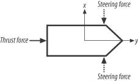
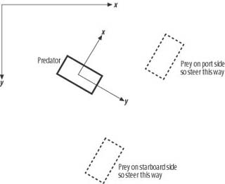
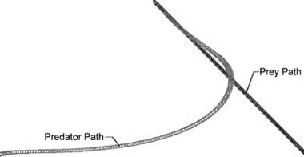

|
|
< Day Day Up > |
|
2.4 Line-of-Sight Chasing in Continuous EnvironmentsThe Bresenham algorithm is an effective method for tiled environments. In this section we discuss a line-of-sight chase algorithm in the context of continuous environments. Specifically, we will show you how to implement a simple chase algorithm that you can use for games that incorporate physics engines where the game entities—airplanes, spaceships, hovercraft, etc.—are driven by applied forces and torques. The example we'll discuss in this section uses a simple two-dimensional, rigid-body physics engine to calculate the motion of the predator and prey vehicles. You can download the complete source code for this sample program, AIDemo2-2, from this book's web site. We'll cover as much rigid-body physics as necessary to get through the example, but we won't go into great detail. For thorough coverage of this subject, refer to Physics for Game Developers (O'Reilly). Here's the scenario. The player controls his vehicle by applying thrust for forward motion and steering forces for turning. The computer-controlled vehicle uses the same mechanics as the player's vehicle does, but the computer controls the thrust and steering forces for its vehicle. We want the computer to chase the player wherever he moves. The player will be the prey while the computer will be the predator. We're assuming that the only information the predator has about the prey is the prey's current position. Knowing this, along with the predator's current position, enables us to construct a line of sight from the predator to the prey. We will use this line of sight to decide how to steer the predator toward the prey. (In the next section we'll show you another method that assumes knowledge of the player's position and velocity expressed as a vector.) Before getting to the chase algorithm, we want to explain how the predator and prey vehicles will move. The vehicles are identical in that both are pushed about by some applied thrust force and both can turn via activation of steering forces. To turn right, a steering force is applied that will push the nose of the vehicle to the right. Likewise, to turn left, a steering force is applied that will push the nose of the vehicle to the left. For the purposes of this example, we assume that the steering forces are bow thrusters—for example, they could be little jets located on the front end of the vehicle that push the front end to either side. These forces are illustrated in Figure 2-7. Figure 2-7. Vehicle forcesThe line-of-sight algorithm will control activation of the steering forces for the predator so as to keep it heading toward the prey at all times. The maximum speed and turning rate of each vehicle are limited due to development of linear and angular drag forces (forces that oppose motion) that are calculated and applied to each vehicle. Also, the vehicles can't always turn on a dime. Their turning radius is a function of their linear speed—the higher their linear speed, the larger the turning radius. This makes the paths taken by each vehicle look smoother and more natural. To turn on a dime, they have to be traveling fairly slowly. Example 2-8 shows the function that controls the steering for the predator. It gets called every time step through the simulation—that is, every cycle through the physics engine loop. What's happening here is that the predator constantly calculates the prey's location relative to itself and then adjusts its steering to keep itself pointed directly toward the prey. Example 2-8. Line-of-sight chase function
void DoLineOfSightChase (void)
{
Vector u, v;
bool left = false;
bool right = false;
u = VRotate2D(-Predator.fOrientation,
(Prey.vPosition - Predator.vPosition));
u.Normalize();
if (u.x < -_TOL)
left = true;
else if (u.x > _TOL)
right = true;
Predator.SetThrusters(left, right);
}
As you can see, the algorithm in Example 2-8 is fairly simple. Upon entering the function, four local variables are defined. u and v are Vector types, where the Vector class is a custom class (see Appendix A) that handles all the basic vector math such as vector addition, subtraction, dot products, and cross products, among other operations. The two remaining local variables are a couple of boolean variables, left and right. These are flags that indicate which steering force to turn on; both are set to false initially. The next line of code after the local variable definitions calculates the line of sight from the predator to the prey. Actually, this line does more than calculate the line of site. It also calculates the relative position vector between the predator and prey in global, earth-fixed coordinates via the code (Prey.vPosition - Predator.vPosition), and then it passes the resulting vector to the function VRotate2D to convert it to the predator's local, body-fixed coordinates. VRotate2D performs a standard coordinate-system transform given the body-fixed coordinate system's orientation with respect to the earth-fixed system (see the sidebar "Global & Local Coordinate Systems"). The result is stored in u, and then u is normalized—that is, it is converted to a vector of unit length. What we have now is a unit vector, u, pointing from the predator directly toward the prey. With this vector the next few lines of code determine whether the prey is to the port side, the starboard side, or directly in front of the predator, and steering adjustments are made accordingly. The local y-axis fixed to the predator points in the positive direction from the back to the front of the vehicle—that is, the vehicle always heads along the positive local y-axis. So, if the x-position of the prey, in terms of the predator's local coordinate system, is negative, the prey is somewhere to the starboard side of the predator and the port steering force should be activated to correct the predator's heading so that it again points directly toward the prey. Similarly, if the prey's x-coordinate is positive, it is somewhere on the port side of the predator and the starboard steering force should be activated to correct the predator's heading. Figure 2-8 illustrates this test to determine which bow thruster to activate. If the prey's x-coordinate is zero, no steering action should be taken. Figure 2-8. Steering force testThe last line of code calls the SetThrusters member function of the rigid body class for the predator to apply the steering force for the current iteration through the simulation loop. In this example we assume a constant steering force, which can be tuned as desired. The results of this algorithm are illustrated in Figure 2-9. Figure 2-9. Line-of-sight chase in continuous environmentFigure 2-9 shows the paths taken by both the predator and the prey. At the start of the simulation, the predator was located in the lower left corner of the window while the prey was located in the lower right. Over time, the prey traveled in a straight line toward the upper left of the window. The predator's path curved as it continuously adjusted its heading to keep pointing toward the moving prey. Just like the basic algorithm we discussed earlier in this chapter, this line-of-sight algorithm is relentless. The predator will always head directly toward the prey and most likely end up right behind it, unless it is moving so fast that it overshoots the prey, in which case it will loop around and head toward the prey again. You can prevent overshooting the prey by implementing some sort of speed control logic to allow the predator to slow down as it gets closer to the prey. You can do this by simply calculating the distance between the two vehicles, and if that distance is less than some predefined distance, reduce the forward thrust on the predator. You can calculate the distance between the two vehicles by taking the magnitude of the difference between their position vectors. If you want the computer-controlled vehicle to evade the player rather than chase him, all you have to do is reverse the greater-than and less-than signs in Example 2-8. |
|
|
< Day Day Up > |
|